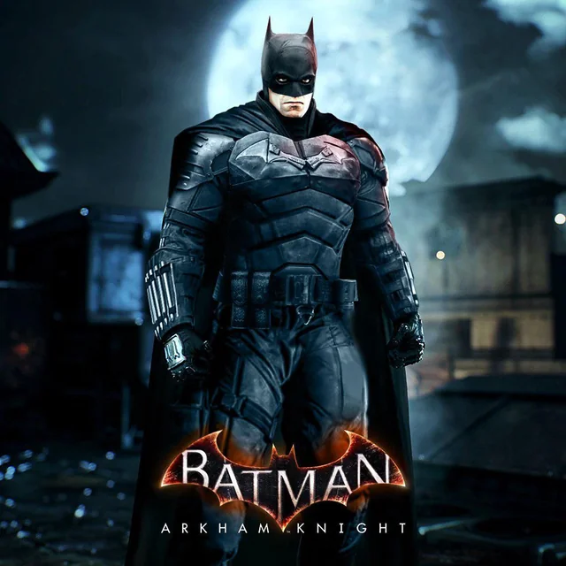
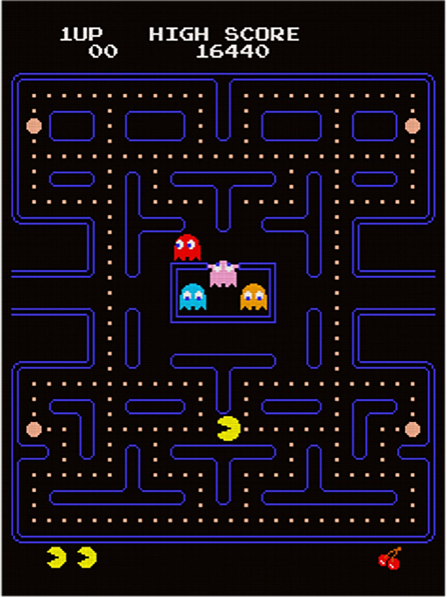
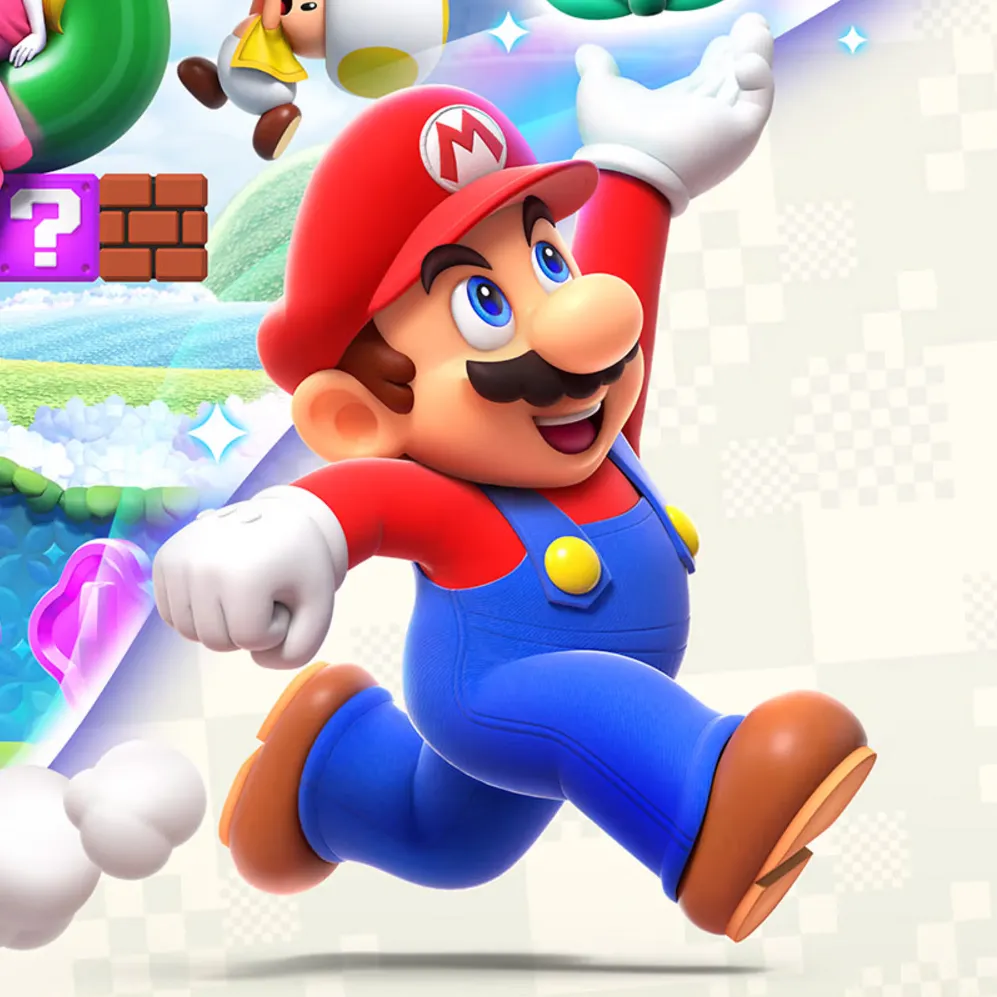
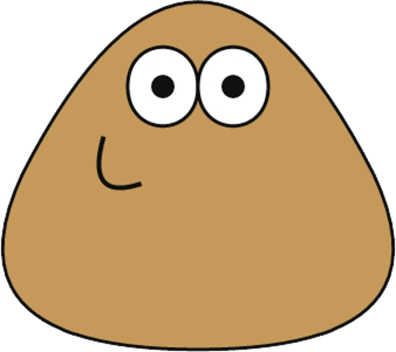

یک بازی ویدیویی سندباکس و جهان باز است که توسط موجنگ استودیوز ساخته و برای رایانه، موبایل و کنسول منتشر شدهاست.
این بازی توسط مارکوس پرسون خلق و با زبان برنامهنویسی جاوا نوشته شدهاست. پس از چندین نسخهٔ آزمایشی خصوصی اولیه،
ماینکرفت اولین بار در ماه مه سال ۲۰۰۹ منتشر شد و قبل از انتشار کامل آن در نوامبر ۲۰۱۱، ینس برگنستن توسعه را به دست
گرفت. ماینکرفت از آن زمان به چندین سیستم عامل دیگر نیز منتقل شدهاست و با فروش بیش از ۲۳۸ میلیون نسخه و با داشتن
بیش از ۱۴۸ میلیون کاربر فعال ماهانه، از سال ۲۰۲۰ پرفروشترین بازی ویدئویی در تمام دوران است؛ همچنین برخی از افراد
این بازی را به عنوان بهترین بازی ویدیویی تاریخ میشناسند.
GTA9.5/10
یک مجموعه بازی ویدیویی اکشن-ماجراجویی و جهان باز ساخته شده توسط دیوید جونز و مایک دیلی است. که پس از آن توسط دن
و سم هوسر، لسلی بنزیه و آرون گاربت توسعه داده میشود. این مجموعه یکی از پرفروشترین فرنچایزهای بازیهای ویدیویی
تاریخ است.
Red Dead8.9/10
یک بازی ویدئویی اکشن-ماجراجویی در سال ۲۰۱۸ است که توسط راکاستار گیمز توسعه و منتشر شدهاست. این بازی سومین
نسخه از سری رد دد است و پیشدرآمد بازی رد دد ریدمپشن در سال ۲۰۱۰ است. رد دد ردمپشن ۲ در جوایز بازی سال ۲۰۱۸ در هشت
رشته نامزد شد و توانست چهار جایزه شامل بهترین موسیقی و روایت داستانی را برنده شود. داستان رد دد ردمپشن ۲ وقایع پیش
از نسخه اول این بازی را در بر میگیرد. بازی در سال ۱۸۹۹ رخ میدهد و داستان یکی از گروههای یاغی از غرب وحشی که
گروه وندر لیند نام دارد را روایت میکند و بازیکن در نقش یکی از اعضای این گنگ به نام آرتور مورگان و در ادامه جان
مارستون را بازی میکند.
Need For Speed9/10
یا جنون سرعت عنوان یک فرنچایز بازی ویدئویی به سبک مسابقهای است که در حال حاضر توسط گوست گیمز توسعه یافته و
بهوسیله الکترونیک آرتز منتشر میشود. این بازی محصول شرکت بلک باکس از زیر شرکت الکترونیک آرتز است.
Spider-Man10/10
یک بازی ویدیوئی در سبک اکشن-ماجراجویی است که بر اساس ابرقهرمانی به نام مرد عنکبوتی از شرکت مارول کامیکس ساخته
شدهاست. این بازی توسط اینسامنیاک گیمز توسعه یافتهاست و بهوسیلهٔ سونی اینتراکتیو انترتینمنت در ۷ سپتامبر ۲۰۱۸ و
بهطور انحصاری برای کنسول پلیاستیشن ۴ منتشر شد همچنین نسخه ریمستر این بازی برای پلی استیشن ۵ و رایانه های شخصی
منتشر شد. این اولین بازی مجوزی است که توسط اینسامنیاک گیمز توسعه یافتهاست. این بازی یک داستان جدید از مرد عنکبوتی
را روایت میکند و به فیلم یا کتاب کمیک ارتباط ندارد. این بازی هر دو جنبههای شخصیت پیتر پارکر و مرد عنکبوتی را
پوشش میدهد و از ویژگیهای یک مرد عنکبوتی با تجربهتر برخوردار است. دنباله این بازی با نام مرد عنکبوتی: مایلز
مورالز در تعطیلات سال ۲۰۲۰ و برای کنسولهای پلیاستیشن ۴ و پلیاستیشن ۵ منتشر شد همچنین نسخه دوم این بازی با
انتشار تریلری معرفی شد.
Batman Arkham9.2/10

یک سری بازی ویدیویی در سبک اکشن-ماجراجویی بر اساس شخصیت بتمن است که توسط راکاستدی استودیوز توسعه داده شده و
توسط سرگرمی تعاملی برادران وارنر منتشر شدهاست.
Pac-Man8.5/10

یک بازی آرکید هزارتو است که توسط شرکت نامکو ساخته و منتشر شدهاست. خارج از ژاپن، این بازی توسط شرکت میدوی گیمز
به عنوان بخشی از توافقنامه صدور مجوز با نامکو در ایالات متحده عرضه میشد. پک-من برای اولین بار در ۲۲ مه، ۱۹۸۰ در
ژاپن انتشار یافت.
شخصیت پَک-مَن به عنوان سمبل شانسبیار و نماد پرچمدار باندای نامکو انترتینمنت بهشمار میرود.
Mario8/10

ماریو یک لولهکش ایتالیایی کوتاه قد و سیبیلو است و یک برادر کوچکتر به نام لوئیجی دارد. او اغلب به دنبال راهی
برای نجات پرنسس پیچ که اسیر باوزر (شخصیت منفی سری بازی های ماریو) شده، است. او برای اولین بار با نام جامپمن در
بازی دانکی کنگ در سال ۱۹۸۱ ظاهر شد. ماریو معروف ترین شخصیت در تاریخ بازیهای ویدئویی است.
Call Of Duty9.3/10
مجموعهای از بازیهای ویدئویی در گونهٔ تیراندازی اول شخص است که توسط کمپانی اکتیویژن منتشر شدهاست. این کمپانی
ابتدا در سال ۲۰۰۳ بر روی بازیهایی که داستانشان در جنگ جهانی دوم جریان داشتند متمرکز بود. این مجموعه با گذشت زمان،
بازیهایی را در رویدادهای اواسط جنگ سرد، دنیاهای آینده، و فضای خارج از کشور ترسیم شدهاند را تولید کردهاست. این
بازیها در ابتدا توسط استودیو اینفینیتی وارد و سپس توسط استودیو تریآرک و استودیو اسلجهمر گیمز توسعه داده
شدهاند. همچنین چندین بازی اسپینآف و دستی توسط دیگر توسعهدهندگان ساخته شدهاست.
Pou10/10

ک بازی ویدئویی برای سیستمعاملهای اندروید، آیاواس و بلکبری است که توسط «پل سالامه» طراحی و توسعه داده شد. این
بازی بیش از ۵۰۰ میلیون بار در دنیا دانلود شده است.